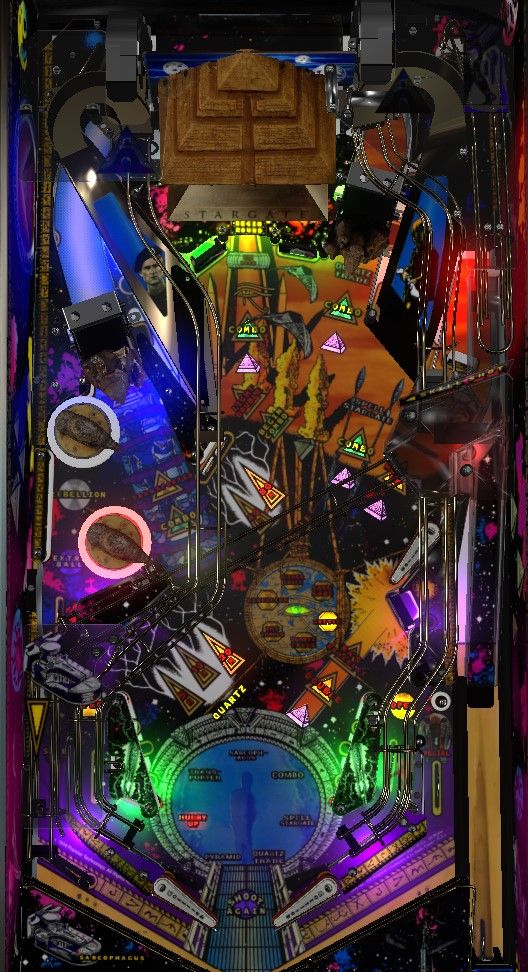

Not to be confused with the various Star Wars or Star Trek pinball machines produced by Data East, Sega, and Bally Williams during the 1990s.
To open yourself up for very large scores on Stargate, work to increase your Super Jackpot early in the game. Every Super Jackpot advance adds 100,000,000 points. Advance the Super Jackpot through Transporter awards (left lane), spelling Stargate at the right ramp, completing a 5-way Combo, or cashing in 10-15 Quartz at the center guardian's lane (the latter is a double advance). Super Jackpot can be scored by cashing in 23+ Quartz or performing well in a non-mode multiball. Main modes start at the Pyramid; Battle is by far the most valuable. 3x Scoring, a Transporter award, lasts 30 seconds but pauses during non-mode multiballs and can apply to Super Jackpots.
The skill shot is a precise-power plunge that seeks to have the ball reach the top of the shooter lane ramp, then fall onto the wire habitrail that runs across the playfield and drops the ball in the Sarcophagus in the left out lane. A successful skill shot awards 10,000,000 points and one Sarcophagus shot, which can award either 3 Quartz or Start Sarcophagus Multiball.
A plunge that is too strong for the skill shot is fed to the upper right flipper. If you don't swing away with the upper right flipper, there is a sizable chance that the ball will flop right down into the center drain. This plunge is oddly harsh for a game as modern as 1995; be mindful of how this may be set up.
When no mode or multiball is running, shoot the Pyramid to start a mode. The currently selected mode is flashing on the amulet near the upper right flipper, and changes each time a slingshot is hit. There are 6 main modes that can be played in any order, followed by Eye of Ra wizard mode, indicated by the eye of horus glyph in the center.
Most modes on Stargate are multiball modes, starting with 2 balls in play with more balls being added as mode shots are scored. Up to 4 balls can be in play at any one time. These modes end when single ball play resumes. There is absolutely no ball save or grace period on any main modes, so if you get house balled or brick drained at the start of the mode, you're done. The 6 modes are:
After all 6 modes are played, the next shot to the Pyramid when no mode or multiball is running starts Eye of Ra wizard mode. Eye of Ra is a 4-ball multiball that comes in three phases.
Completing each phase restarts the 4-ball multiball. Completing Phase 3 ends Eye of Ra and converts the scoring rules to Sarcophagus Multiball for as long as there are 2 or more balls in play. Eye of Ra ends immediately if there is just one ball left on the playfield. When Eye of Ra ends by any means, the modes unlight and can be played again.
If you can help it, try not to start Eye of Ra Multiball until you are able to collect the 3x Scoring for 30 Seconds award from the Transporter, because the 30 second timer for 3x Scoring does not run during Eye of Ra Multiball and Triple Super Jackpots are a fantastic way to make your score explode.
Making a Skill Shot awards one Sarcophagus shot. You can also earn a Sarcophagus by knocking down the lone drop target in the right lane, then shooting the upkicker behind it within about 20 seconds. If you do not shoot the right lane within the 20 seconds, the Sarcophagus credit unlights, but the drop target does not reraise; you need to shoot the right lane just to reraise the drop target to earn another chance. If a mode is running, Sarcophagus shots award 5 Quartz. Sarcophagus shots made when no mode or multiball is running alternate between starting Sarcophagus Multiball or scoring 3 Quartz.
In Sarcophagus Multiball, three shots are lit for jackpots: the two guardians and the lower right standup target. Making a jackpot scores 10,000,000 points and lights another shot. After making a jackpot at each of the 6 major shots- both ramps, all three lanes, and the lower right target- the Pyramid will be lit for Super Jackpot. After collecting a Super Jackpot, the sequence restarts but with only one jackpot lit at a time. Scoring 6 more jackpots then making the Pyramid again scores a Double Super Jackpot. The second phase repeats until there is only one ball left in play. Sarcophagus Multiball starts with 2 balls; 1 additional ball is added the first time a jackpot is made. There is no ball save or quick restart on Sarcophagus Multiball. The timer on 3x Scoring pauses during Sarcophagus Multiball; I sure hope it's not possible to stack 3x Scoring with a Double Super Jackpot to earn a 6x Super Jackpot, but if you can, that's likely to be several billion points in a single shot, which is kind of a big deal.
The side ramp always starts the Combo sequence. After making any shot lit for Combo, a new shot will light for Combo; there is no timer on shots lit for Combo, but if you hit any switch in the game other than the Combo shot, the Combo breaks and you must start over with a new side ramp shot. Combos are always lit in the same order.
The game keeps track of the number of Combos you make across the entire game. At 10 Combos, a hurry-up is started. At 30 Combos, extra ball is lit at the left lane near the bumpers. You can also put in your initials for breaking the machine's record for most Combos.
The right ramp always adds a letter in Stargate. (For the first completion, Star is spotted for you, so it only takes 4 shots to finish Stargate.) Completing Stargate gives the next award in the following sequence: 3 Quartz, Advance Super Jackpot, 5 Quartz, Advance Super Jackpot, repeat.
Quartz is an in-game currency that can be earned in a variety of ways.
Make the left in lane or shoot the center lane guardian's target to raise the center guardian, then shoot to the kicker behind it to score 1 Quartz and a Trade Quartz offer. You are allowed to give away all of your Quartz for an award, with increasingly nice awards the more Quartz you have.
You also get 1,000,000 points in end of ball bonus (cannot be multiplied) for each Quartz you have at the end of a ball. Cashing in your Quartz always resets you to 0. There's no reason not to cash in if Super Jackpot is being offered to you. Early in a game, Double Advance Super Jackpot can also be quite valuable, since the Super Jackpot value never resets or decreases over the course of a game.
The lower right standup target, all three lanes, both ramps, and the Pyramid all have a white pyramid insert in front of them. Shoot the shot with a flashing white pyramid insert to light it solidly and cause a new shot to flash. Shots start flashing in random order, but the Pyramid is always last. Completing the sequence awards 5 Quartz the first time, 30,000,000 points the second time, Advance Super Jackpot the third time, then repeats.
Hurry-Up is started after every 10 pop bumper hits, or after making 10 total Combos. To score the hurry-up, shoot the right lane within about 15 seconds. Unlike conventional hurry-up modes, the value of the hurry-up does not decrease the longer you take, as long as you make the right lane shot in time. Hurry-ups score 10,000,000 the first time, 30,000,000 the second time, extra ball the third time, and 50,000,000 the fourth time and thereafter.
The Transporter is lit at the left lane after hitting the left guardian standup target when no mode or multiball is running. The Transporter functions like a mystery award, but the game tells you what the next award is in the status report, and you can change the current award by hitting the standup target immediately left of the Pyramid. There are 12 total awards. After all 12 are collected, the next Transporter starts Sandstorm Multiball.
From the beginning of the game, only the 4 awards marked with * above can be selected. Once those 4 awards are earned, Sandstorm Multiball is played. After the first Sandstorm award from the Transporter, the pool is reset with all 11 awards (extra ball is not re-added to the pool).
Sandstorm Multiball is a 3-ball multiball with a short ball save and no add-a-balls. During Sandstorm, all 7 white pyramid shots are constantly lit for 10,000,000 points. Sandstorm ends when there is only 1 ball in play. Shot values from Sandstorm are awarded alongside the end of ball Quartz bonus, not immediately, so don't tilt on a ball where you play Sandstorm.
The large blue portal near the flippers wants you to complete 7 tasks throughout the game to play Stargate Multiball, a separate wizard mode. These tasks correspond to the 7 previous sections of this guide, starting at the top of the portal and going clockwise. When you see an animation of a rotating stone wheel on the dot display, you've completed one of these tasks.
After doing all 7 of these things, Stargate Multiball wizard mode begins as soon as all other modes and multiballs end. Stargate Multiball can only be played once per game! Once it ends, nothing resets, and you can't go back! In Stargate Multiball, all 7 White Pyramid shots start out being lit. Make a lit shot to score 20,000,000 points and unlight it. Make all 7 shots to score a Super Jackpot and relight all of them. Repeat this until there is just one ball in play.
At the end of the final ball of the game, you get a Segment Bonus of 10,000,000 points for each of the 7 tasks toward Stargate Multiball that you completed.
In the lower left of the game are a 3-bank and a 2-bank of drop targets.
Completing either bank with a single shot (this is only really possible with the 2-bank when both targets are up) scores the Ra's Power award of 5,000,000 the first time, then 10,000,000, 20,000,000, 30,000,000, and a repeatable 40,000,000.
If the left and right drop targets in the 3-bank are knocked down and the center one is still standing, that center drop target scores 1 Quartz.
If none of the drop targets in the 3-bank are flashing, complete the 3-bank to make the leftmost one flash. Hitting the leftmost target by itself scores 5,000,000 points and flashes the center target. Keep working through the single flashing target, being careful to hit the flashing drop target and no other drop targets in either lower left bank: 3-bank center target scores 10,000,000, then 3-bank right target scores 20,000,000, then 2-bank lower target scores 40,000,000, then 2-bank upper target scores 80,000,000 points. If you hit a wrong drop target at any time, the sequence ends and you must start over. The 40,000,000 and 80,000,000 drop targets are also on a timer of 10 seconds by default, with the chain breaking if time runs out. The solo drop target in the right orbit lights Double in front of the 2-bank for about 15 seconds. If you advance the sequence to the 2-bank while Double is lit, hitting those two drop targets down in proper order scores 80,000,000 then 160,000,000 points. This is really difficult to do, but the reward is fitting, and it's very cool that it exists.
Hitting this target outside of a mode or multiball will cause it to start flashing. Hit the target while it's flashing to score 5,000,000 the first time, 10,000,000 the second time, and 20,000,000 the third time and onward. You can keep hitting the target to score the value as long as it does not time out, which happens after about 5 seconds without being hit. Making the side ramp lights the Ra's Bracelet target for Double, which multiplies all scoring values listed here by 2.
Stargate has a conventional in/out lane setup. Rolling through an in lane, when lit, causes the opposite guardian to raise up, exposing the hole behind them. The left out lane is available for an automatic kickback on every other slingshot hit; otherwise, it scores the Sarcophagus from a skill shot or right lane shot. The right out lane is lit for Special, but only on the final ball of the game for players whose score is less than 30,000,000. Crossing the 30,000,000 threshold or starting Sarcophagus Multiball unlights the special.
Bonus is scored as 1,000,000 points times the amount of Quartz you have, plus any points earned from Sandstorm on that ball, with no bonus multiplier or mid-ball bonus collect. At the end of the game, you also receive a bonus equal to 10,000,000 points times the number of Portal segments you lit en route to Stargate Multiball, maxing out at 70,000,000 points if you did in fact play Stargate Multiball itself.
In competition/novelty play, extra ball scores 100,000,000 points. I am not sure if it is possible for special to have a point value.
The automatic Glidercraft round, which begins at the start of a player's final ball for free if they have not played Glidercraft to that point, can be disabled.
The time limits on main modes, Ra's Bracelet, hurry-ups, the out lane Special, the 40,000,000 and 80,000,000 drop targets, and the Sarcophagus chance can all be adjusted. Most can be set to 5, 10, or 15 seconds, with 10 being default.
In the first wave of Sarcophagus Multiball, the game can light either 1, 2, or 3 shots at a time. Default is 3. After a super jackpot is scored, there is always only one at a time.
By default, 1 ball can be added to Sarcophagus Multiball. This can be adjusted to 0 or 2.
The alternating availability of the left out lane kickback can be disabled so that it is almost always closed.
Ball save length can be set to 4, 6, 8, or 10 seconds, or ball save turned off.
Stargate offers a Reduced Scoring mode, which reduces the timer for the 40,000,000 and 80,000,000 drop targets and cuts the value of most features in half. This guide assumes Reduced Scoring is off, which is the default state.
| If you need... | Try... |
| 5,000,000 points | ...starting a main mode, or hitting the 5,000,000 lower left drop target. |
| 10,000,000 points | ...making a skill shot/Sarcophagus shot. |
| 50,000,000 points | ...playing through a main mode in full or collect a few jackpots from Sarcophagus Multiball. |
| 200,000,000 points | ...playing Sarcophagus Multiball or building up 20+ Quartz with the goal of earning a Super Jackpot. |
| 500,000,000 points | ...focusing on building up your Super Jackpot with the respective Transporter, Quartz, or Stargate awards, then collect the Super Jackpot via Sarcophagus Multiball (or Stargate Multiball if you're close to that). |
| 1,000,000,000 points or more | ...building your Super Jackpot, but also focusing on Transporter awards with the goal of starting 3x Scoring for 30 Seconds immediately before starting Sarcophagus, Eye of Ra, or Stargate Multiballs where the 30 seconds timer is paused; to reasonably make up a 10-digit deficit, you're going to want to start collecting 3x Super Jackpots. |